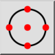
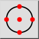
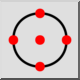
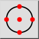

Referenca
Toolbar / Icon:
 

Menu: Pritrdi > Referenca
Shortcut: S, R
Commands: snapreference | sr
Toolbar / Icon:
 

Menu: Pritrdi > Referenca
Shortcut: S, R
Commands: snapreference | sr
Izbere referenčne točke.
Referenčne točke so modre pike, ki se prikažejo ko je nek objekt izbran.
To je še posebaj uporabno pri lovljenju točk krogov ter lokov, za npr risanje srednjic.